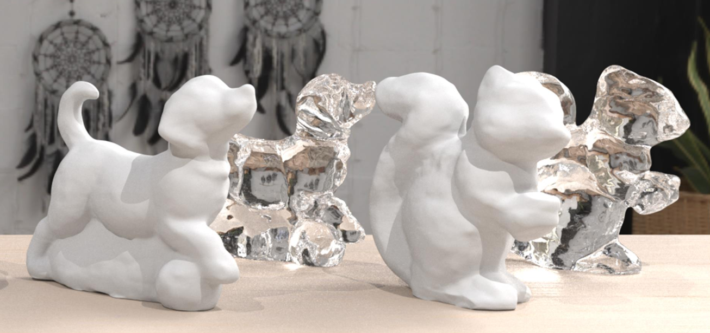
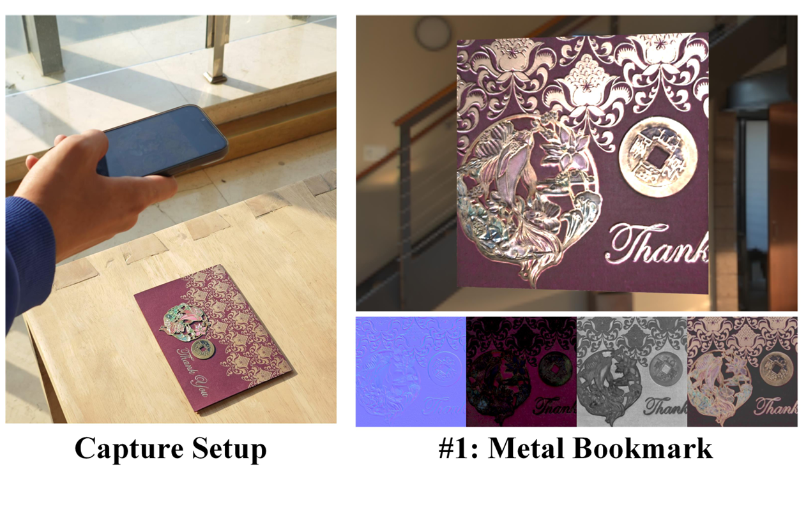
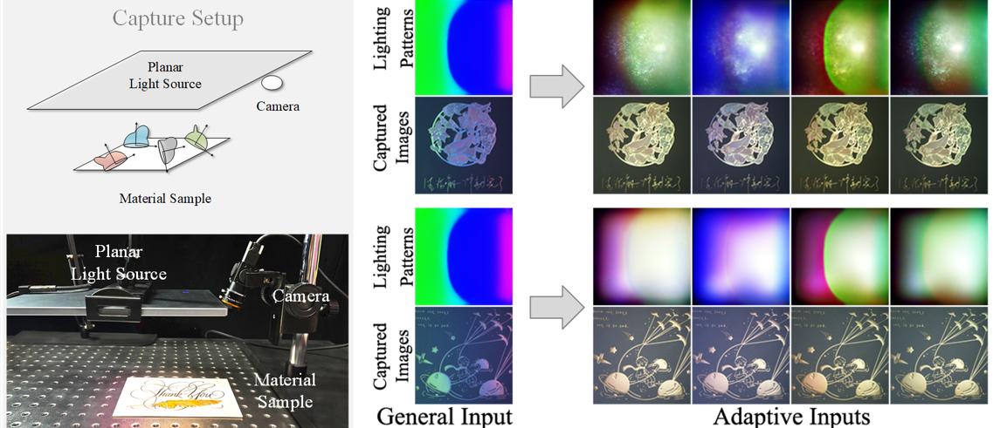
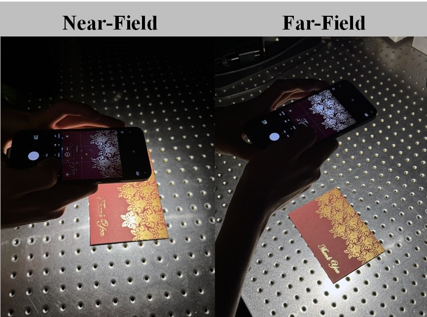
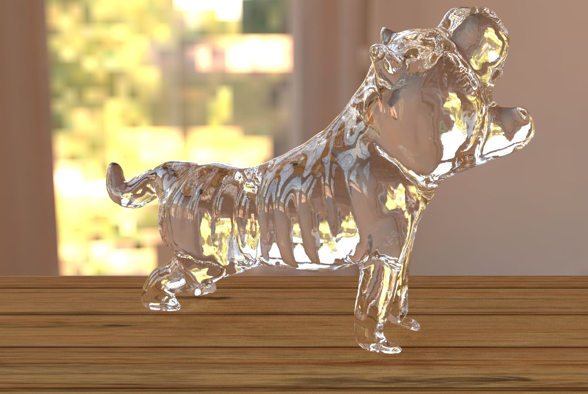
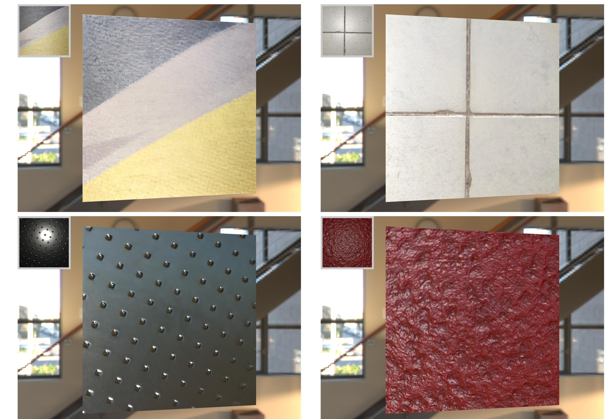

I am a second year PhD student in the Visual Computing Lab at Tianjin University, under the supervision of Professor Jiawan Zhang. Prior to this, I received both my B.S. and M.S. degrees from Tianjin University. My current research interests focus on 3D reconstruction and material acquisition. I hope that one day we will be able to digitize the real world easily and with high fidelity, enabling us to truly live in a world where the digital and the physical are seamlessly integrated.
📝 Publications


EBREnv: SVBRDF Estimation in Uncontrolled Environment Lighting via Exemplar-Based Representation
SIGGRAPH Asia 2025

Sparse SVBRDF Acquisition via Importance-Aware Illumination Multiplexing
SIGGRAPH Asia 2025


